Archived Events
Get involved! Join us and other partners for conferences and workshops every year.
2020:
Safe Streets for Everyone: 21st Annual National Bike Summit
March 15-17 – Arlington, VA | Washington, D.C.
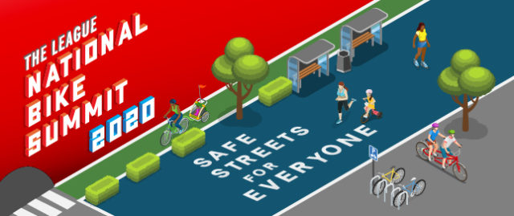
At the 21st National Bike Summit, advocates will come together to collaborate on a shared vision of Safe Streets for Everyone. Summit attendees can look forward to panel sessions, keynote talks, poster presentations, expanded networking opportunities, and much more.
National Shared Mobility Summit
March 17-19, 2020 – Hyatt Regency McCormick Place, Chicago, IL
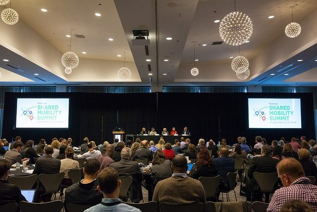
This three-day meeting is where innovators and advocates across the public and private sectors find new ideas to support equitable, accessible, affordable and clean mobility for everyone.
NABSA 2020 Annual Conference
September 30 to October 2 — Guadalajara, Mexico
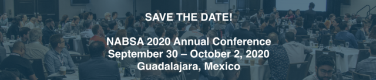
The NABSA Conference is the bikeshare and shared micromobility industry’s membership organization with representation from system owners, operators, host cities, equipment providers and technology providers. Next year, NABSA will be joined by BKT Bici Pública, a company that specializes in the design, implementation, and operation of bike-sharing systems. Stay tuned for more details about the conference!
2019:
Designing Cities: Toronto
September 9-12
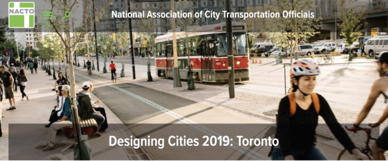
The NACTO Designing Cities Conference brings together 900 officials, planners, and practitioners to advance the state of transportation in cities.
How We Move: Micromobility, Macro Impact
September 30 to October 2 — Indianapolis, IN
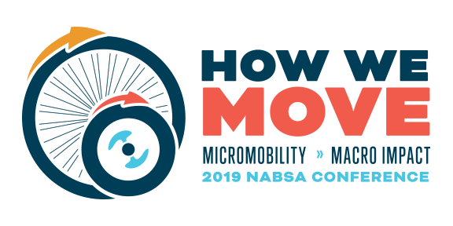
This year, the NABSA Annual Conference brought together 300 leaders in Indianapolis for How We Move: Micromobility, Macro Impact to learn, network, and chart the future of bikeshare and shared micromobility. This annual conference is considered the leading global venue for bikeshare, shared micromobility, and transportation leaders, practitioners, equipment providers to tackle important issues facing the industry.
Hindsight Conference: Erasure, Remembrance, and Healing
December 6 — City Tech, Brooklyn, NY
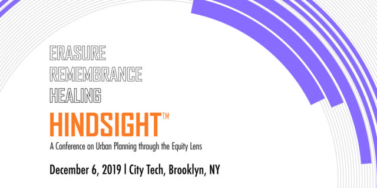
This year’s theme of Erasure, Remembrance, and Healing honored several anniversaries that were marked this year. In the conference’s program, committee members wrote that it “reflects on the intersection of urban planning, policy, and community development, with the erasure of history, collective amnesia, the movement of remembrance, and community healing.”
2018:
NABSA / Better Bike Share joint conference
September 4-7 — Portland, OR
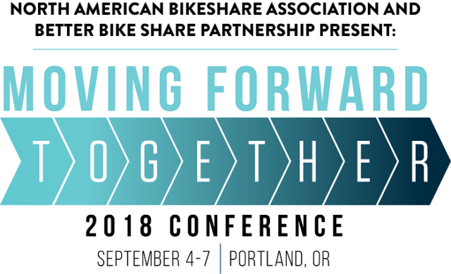
The 2018 North American Bikeshare Association and Better Bike Share Partnership conference will take a deep dive into the equity-focused work of bike share systems across North America, and share challenges, successes and innovations that make bike share easy, accessible and affordable for all people.
Designing Cities 2018: Los Angeles
October 1-4
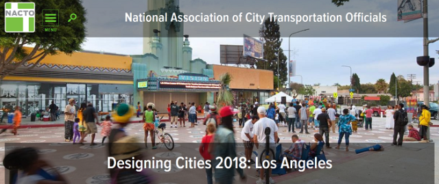
The NACTO Designing Cities Conference brings together 800 officials, planners, and practitioners to advance the state of transportation in cities.
Facing Race: A National Conference
November 8-10 — Detroit, MI
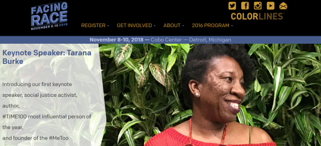
Founded in 1981, Race Forward brings systemic analysis and an innovative approach to complex race issues to help people take effective action toward racial equity. Founded in 2002, CSI catalyzes community, government, and other institutions to dismantle structural racial inequity and create equitable outcomes for all.
The Untokening
November 11 — Detroit, MI
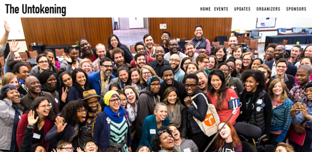
The Untokening is a multiracial collective that centers the lived experiences of marginalized communities to address mobility justice and equity. The Untokening will hold its third convening after the Facing Race conference.
Walk Bike Places
September 16-19 — New Orleans
PlacesForBikes Conference
May 1-3 — Indianapolis, IN
PolicyLink Equity Summit 2018
April 11-13 — Chicago, IL
National Bike Summit
March 5-7 — Washington, DC
The National Bike Summit is the premier bike advocacy event of the year, uniting the voices of bicyclists on Capitol Hill. This year’s theme is Grass Roots Grow Together, we’ll be showcasing successes at the local level, learning how they happen and exploring ways to expand their reach. Peer learning is a critical component of growing and strengthening the bicycling movement. Together, we make our local, regional, and national work a unified force of unstoppable change.
2017:
NABSA Annual Conference
August 30-September 1 — Montreal, Canada
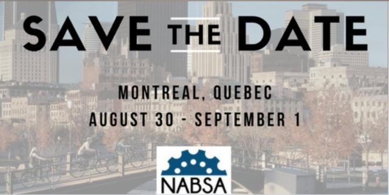
The 4th Annual Conference of the North American Bikeshare Association in Montreal, Canada. Learn from each other, meet new people, and explore the latest thinking and innovations in the bikeshare industry. The 2017 conference will focus on the themes of: Marketing, Equity and Growth, Operations and Data Management, New Developments, Research and the Future of Bikeshare, Business Planning, Sponsorships and Start-up, and more!
Designing Cities: Chicago
October 30-November 2 — Chicago, IL
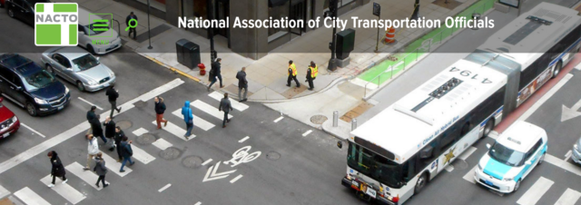
Now in its sixth year, the NACTO Designing Cities Conference brings together 800 officials, planners, and practitioners to advance the state of transportation in cities.
The conference will take place at the Swissôtel Chicago, at the confluence of the Chicago River and Lake Michigan, and adjacent to Millennium Park and the Chicago Loop.
2016:
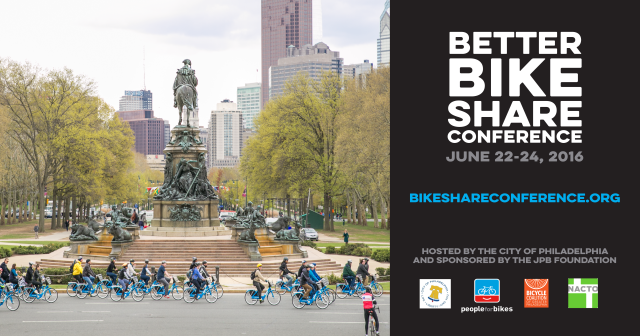
Better Bike Share Conference
June 22-24 — Philadelphia, PA
We invite you to share your expertise with key stakeholders and members of the bike share and social justice communities at our national conference in Philadelphia, June 22-24. Call for proposals and conference topics are due by February 29. Conference registration opens March 1. Details available at this link above.
Pro Walk/Pro Bike/Pro Place
September 12-15 — Vancouver, Canada
{kind=link}
The 19th Pro Walk/Pro Bike/Pro Place in Vancouver is expected to draw 1,000 city planners, transportation engineers, public health professionals, elected officials, community leaders, and professional walking and bicycling advocates. Breakout sessions, panel discussions, and poster sessions address the latest trends, research, and best practices. Plenary speakers bring perspectives from other disciplines, and other experiences to help improve and expand your practice.
Designing Cities
September 26-29 — Seattle, WA
{kind=link}
Now in its fifth year, the conference is the nation’s premier gathering of transportation leaders and practitioners from across the country.
Start your trip to the Pacific Northwest with Seattle Summer Parkways, an open streets festival. Then over the next few days, experience the unique culture of the area, combining a public appreciation of art, a growing café scene, ties to Scandinavia, lush urban gardens (and spectacular scenery all around), and of course, a high level of respect for best practices in transportation.
50+ on-the-street WalkShops, and highly targeted workshops, plenaries, and networking opportunities attract over 500 transportation leaders from across the country, and abroad.
This year there is also an optional one-day trip to nearby Portland, OR!
NABSA Annual Conference
November 9-11 — Austin, TX
{kind=link}
The 2016 NABSA Annual Meeting will be held November 10-11 in downtown Austin, Texas! On Wednesday, November 9, we will host preliminary sessions for new bike share programs and those looking into starting them, as well as a set of technical and field workshops.
Stay tuned for more details!